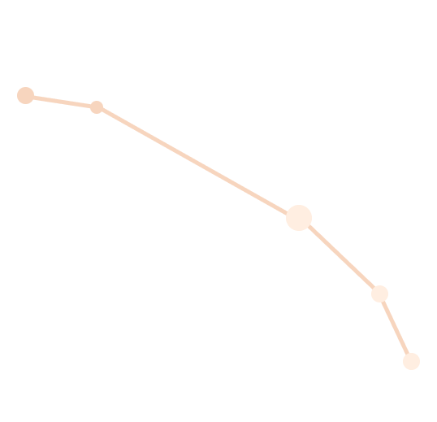

ARIES
Aries is a zodiacal constellation in the northern sky lying between Pisces and Taurus, at about 3 hours right ascension and 20° north declination.
In astrology, Aries is the first sign of the zodiac, considered as governing the period from about March 21 to about April 19.
Its representation as a ram is identified with the Egyptian god Amon and, in Greek mythology, with the ram with the golden fleece whom Zeus placed in the heavens as the constellation.
Element: Fire
Ruling Planet: Mars
Birth Stone: Bloodstone
Zodiac Symbol: Ram

Best Compatible Signs With Aries:


Least Compatible Signs With Aries: